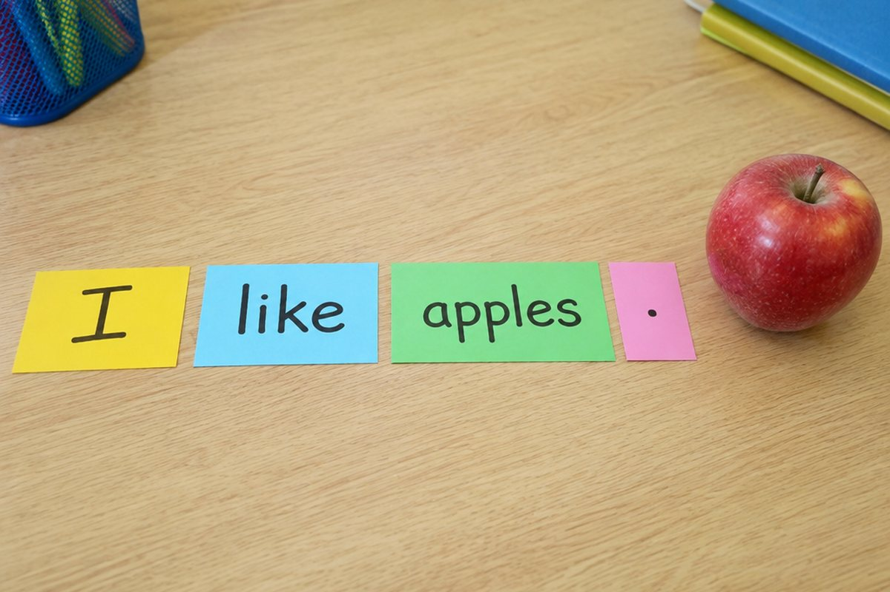

영어 문장은 어떤 순서로 만들까?

우리말은 "나는 사과를 먹어"라고 하지만 영어는 "I eat an apple"이라고 해요. 순서가 다르죠? 영어 문장을 만드는 규칙을 알아봐요.
영어 문장의 기본 순서
영어 문장은 보통 '누가(주어) + 한다(동사) + 무엇을' 순서로 만들어요.
우리말은 '무엇을'이 동사 앞에 오지만, 영어는 동사가 먼저 와요. I(나는) + eat(먹는다) + an apple(사과를)이에요.
I + play + soccer. (나는 축구를 한다.)
문장을 쓰는 규칙
문장의 첫 글자는 대문자로 쓰고, 문장이 끝나면 마침표(.)를 찍어요.
'나'를 뜻하는 I는 문장 어디에 있어도 항상 대문자로 써요. 낱말과 낱말 사이는 한 칸 띄어 써요.
my dog is cute → My dog is cute.
be동사로 상태 말하기
'~이다', '(키가 큰, 기쁜 같은) 상태이다'를 말할 때는 am, is, are를 써요. I와는 am, he·she·it와는 is, you·we·they와는 are가 짝이에요.
"She is tall.(그녀는 키가 커.)", "We are friends.(우리는 친구야.)"처럼 써요.
I am happy. / He is my brother. / They are students.
묻는 문장과 부정하는 문장
묻는 문장은 끝에 물음표(?)를 붙여요. "Are you hungry?"처럼 be동사를 앞으로 보내거나, "Do you like music?"처럼 Do를 앞에 붙여요.
'~하지 않다'는 not을 넣어요. "I am not sad.", "I don't play the piano."처럼 써요.
You are tall. → Are you tall? / I like milk. → I don't like milk.
핵심 낱말
- 주어
- 문장에서 '누가'에 해당하는 말. 예: I, She
- 동사
- 문장에서 '한다'에 해당하는 말. 예: eat, play
- am / is / are
- '~이다', '(어떤 상태)이다'를 나타내는 말(be동사)
- 마침표
- 문장 끝에 찍는 점(.)
- 물음표
- 묻는 문장 끝에 붙이는 표시(?)
꼭 알아야 할 표현
| I play soccer. | 나는 축구를 해. | 누가 + 한다 + 무엇을 |
| She is tall. | 그녀는 키가 커. | |
| We are friends. | 우리는 친구야. | |
| Are you hungry? | 너 배고프니? | be동사를 앞으로 보내 묻기 |
| Do you like music? | 너는 음악을 좋아하니? | Do를 앞에 붙여 묻기 |
| I don't play the piano. | 나는 피아노를 치지 않아. |
한 줄 정리
- 영어 문장은 '누가 + 한다 + 무엇을' 순서로 만들어요.
- 첫 글자는 대문자, 끝에는 마침표나 물음표를 붙이고, I는 항상 대문자예요.
- I-am, he/she/it-is, you/we/they-are로 짝을 맞추고, 부정은 not을 넣어요.
학교 교육과정 연결
- [6영02-03] 알파벳 대소문자와 문장 부호를 문장에서 바르게 사용한다.
- [6영02-02] 실물, 그림, 동작 등을 보고 간단한 단어, 어구, 문장으로 말하거나 쓴다.